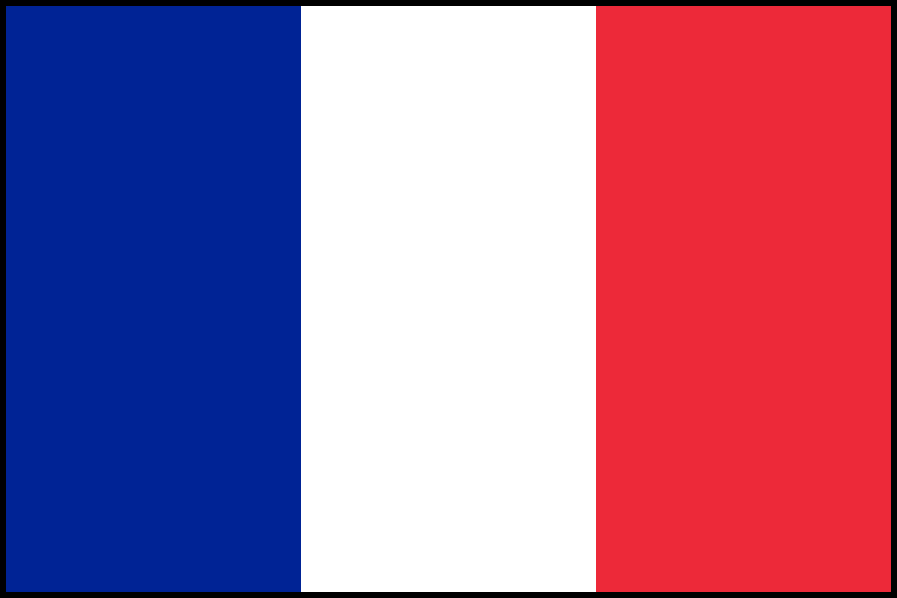
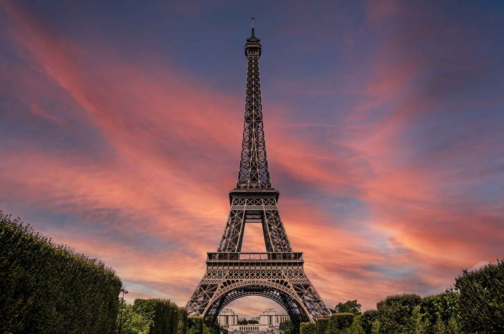
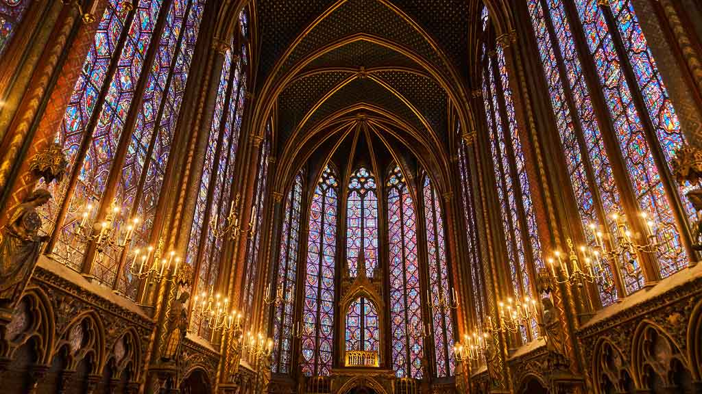
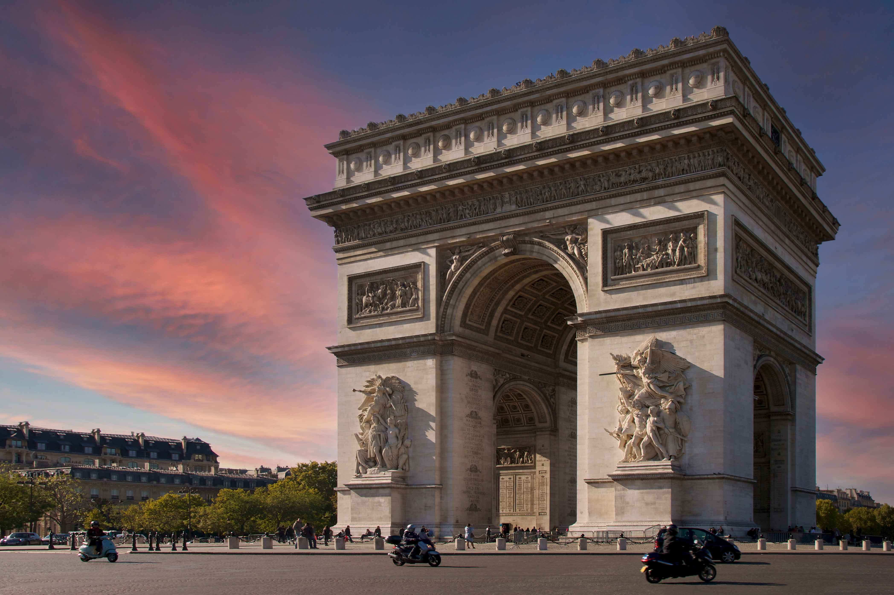
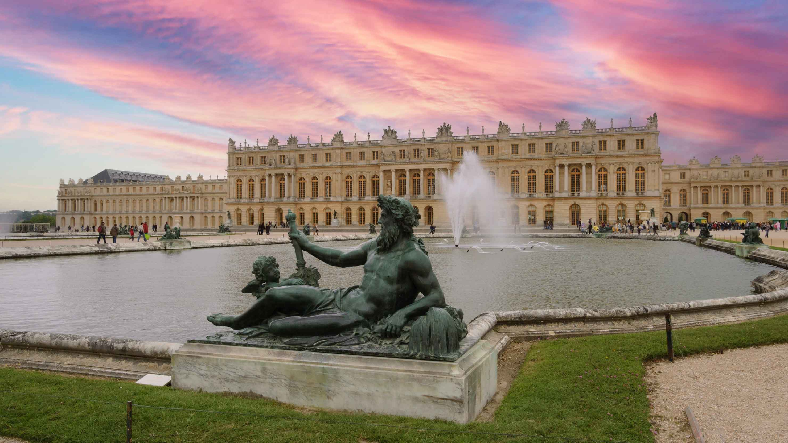

France, The City of Love

France, officially the French Republic, France, or the République Française, is a country located in northwestern Europe. Historically and culturally, France is one of the most important countries in the Western world and also plays a very important role in international affairs, with former colonies all over the world. Bounded by the Atlantic Ocean and the Mediterranean Sea, the Alps and the Pyrenees, France has long formed a geographic, economic and linguistic bridge between northern and southern Europe. It is the most important agricultural producer in Europe and one of the world's leading industrial powers.
Tourist Attractions
In France there are many things that are a must see if you plan a trip over. From beautiful architecture to famous land marks France has alot to see so plan accordingly
The Eiffel Tower
La Tour Eiffel, or The Eiffel Tower is a wrought-iron lattice tower on the Champ de Mars in Paris, France. It is named after the engineer Gustave Eiffel, whose company designed and built the tower on January 28th, 1887 and was inaugurated on March 31st, 1889. It took two years, two months, and 5 days to build the entire tower, it was a demonstration of French engineering personified by Gustave Eiffel and was a defining miment of the industrial era.
Fun Fact about the Eiffel Tower
The Eiffel Tower was supposed to only last about 20 years, but they installed a giant radio antenna on top to save it from destruction.
Côte d'Azur

The Cote d’Azur is a must visit if you plan to travel to France, where the climate and quality of life are among the best in France. The countryside of inland Provence is captivating with its stunning rock formations and colorful, iridescent soils. Between rugged hills and mountains, there are deep canyons, fertile valleys, covered with lavender, almond groves and ancient olive and vines. The pleasant aroma of wild herbs such as lemon verbena, rosemary, thyme or basil can be smelled everywhere. The country smells so good, it's no wonder that perfume is a big local industry.
The Sainte-Chapelle
The Sainte-Chapelle is a beautiful piece of history, infact it is the most extensive collection of 13th century stained glass in the world. Quick history on the Sainte-Chapelle, it was commissioned by King Louis IX and was a sacred shrine to house relics of the Passion of Christ. The king acquired from the Emperor of Constantinople the Crown of Thorns in 1239 and a fragment of the Holy Cross and the Holy Lance in 1241. These three items alone were worth almost three times what King Louis paided to build the Sainte-Chapelle.
Arc de Triomphe
Arc de Triomphe, in full Arc de Triomphe de l’Étoile, massive triumphal arch in Paris, France, one of the world’s best-known commemorative monuments. The Arc de Triomphe is an iconic symbol of French national identity and took 30 years to build. The Tour de France bicycle race ends near it each year, and the annual military parade marking July 14—known both as French National Day and Bastille Day—begins its journey at the arch. The construction started in 1806 on August 15th, Napoleon's birthday, and was finished in 1836 under King Louis-Philippe who opened it on July 29th.
Cathédrale Notre Dame de Strasbourg

The Strasbourg Cathedral, Cathedral of Our Lady of Strasbourg, Cathédrale Notre-Dame de Strasbourg, or Cathédrale de Strasbourg, is widely considered to be among the finest examples of Rayonnant Gothic architecture. The start of construction was in the year 1015, relaunched in 1190, and the finished in 1439. It was the world's tallest building from 1647 to 1874, 227 years! Today it is the sixtih tallest chruch in the world, and the highest still standing structure built entrely in the Middle Ages.
Palace of Versailles
the Palce of Versailles is a former royal residence located in Versailles, about 12 miles (19km) west of Paris, France. 15 Million people visit this palce every year making it one of the most popular tourist attractions in the world. The man who built the was named Louis Le Vau, After the Great Royal Entertainment in 1668, Louis XIV entrusted Le Vau, First Architect to the King since 1654, with the extension of the brick and stone palace built by his father Louis XIII.